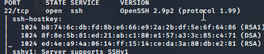

in nmap part we had got this na

make its note the verson number
here we got the version na
so we need to find it out ourselves
we ll connect to ssh through this specific port and try to get any info
even say u try one login attempt bhi thats called exploutation


we tried to connec there bt its asking for password na
bt at times a banner is exposed and it says the version of ssh
we didnt get it here
so go with what u got
ssh ko hammer karna padega with brute force and spray